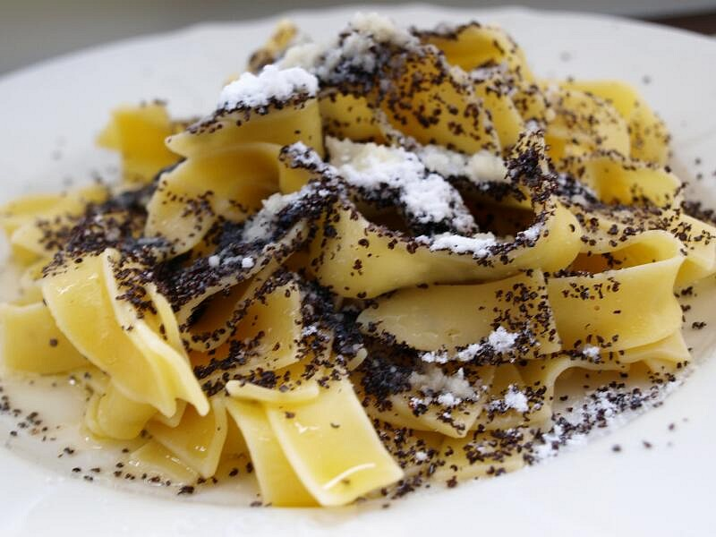

Jednoduchý a tradiční pokrm z těstovin s mletým mákem a máslem.
V hrnci s vroucí osolenou vodou vaříme těstoviny asi 10 minut. Poté je necháme dalších 10 minut v horké vodě pod pokličkou.
Vodu slijeme a k těstovinám přidáme dva plátky másla.
Připravíme posypku smícháním mletého máku s cukrem podle chuti.
Uvařené těstoviny nandáme na talíř a hojně posypeme makovou posypkou.